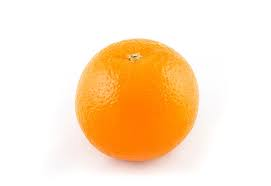

Presidentes Manzanas
Ralls Genet: es una manzana utilizada en la cría de otras más modernas como la Fuji.
Fuji: este tipo de manzana proviene del cruce de dos variedades estadounidenses Ralls Genet y Red Delicious.
Golden
Granny Smith
Reineta
Delicia o Red Delicious
Starking
Gala
click en la imagen para ir a la proxima pàgina:
